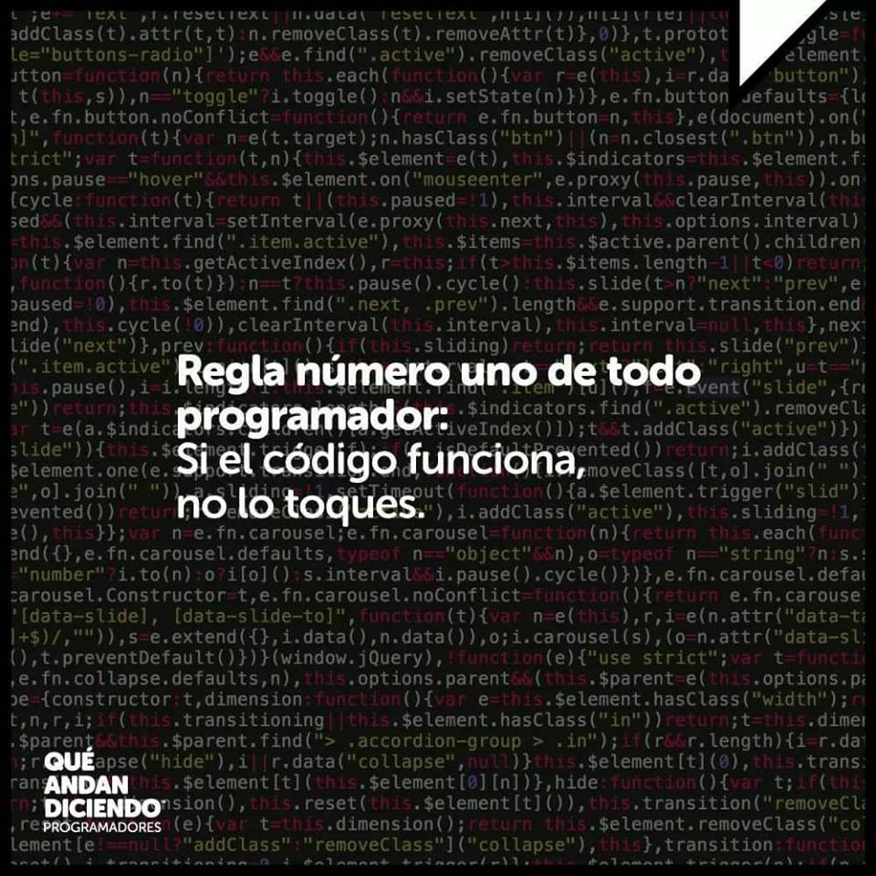

Información Personal

Soy una persona introvertida y que tarda en tomar afectos. el 90% de mi tiempo me la paso vagando por mi mente en busca de la mejora continua.
Mi pasión es la programación, sin importar el lenguaje. Actualmente manejo PHP a nivel SR. Me apasiona buscar funcionalidades y ventajas a todo.
- Español
- Latino
- Ingles 60%
- Japones 30%